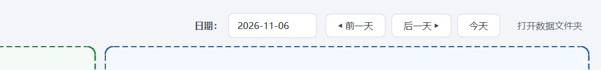
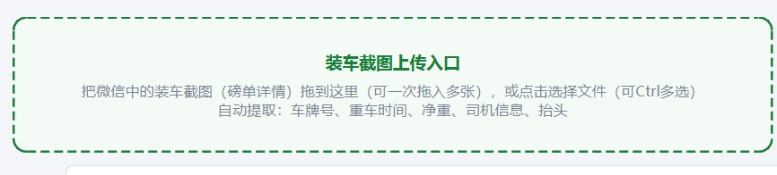
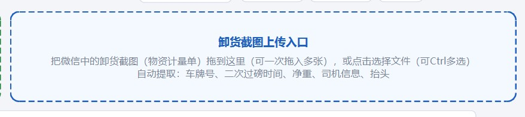
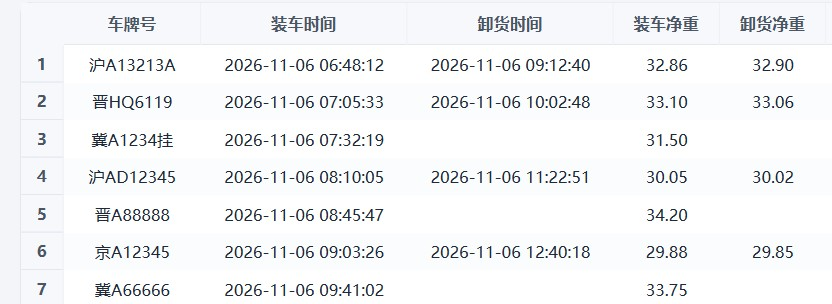
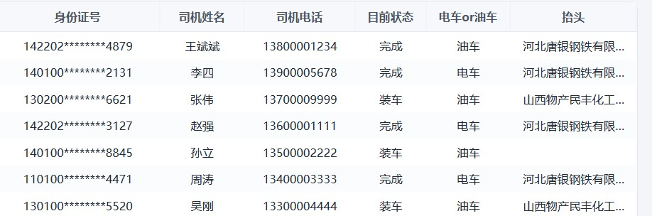
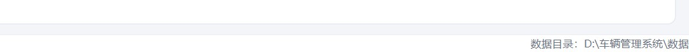
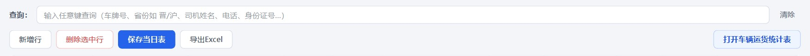
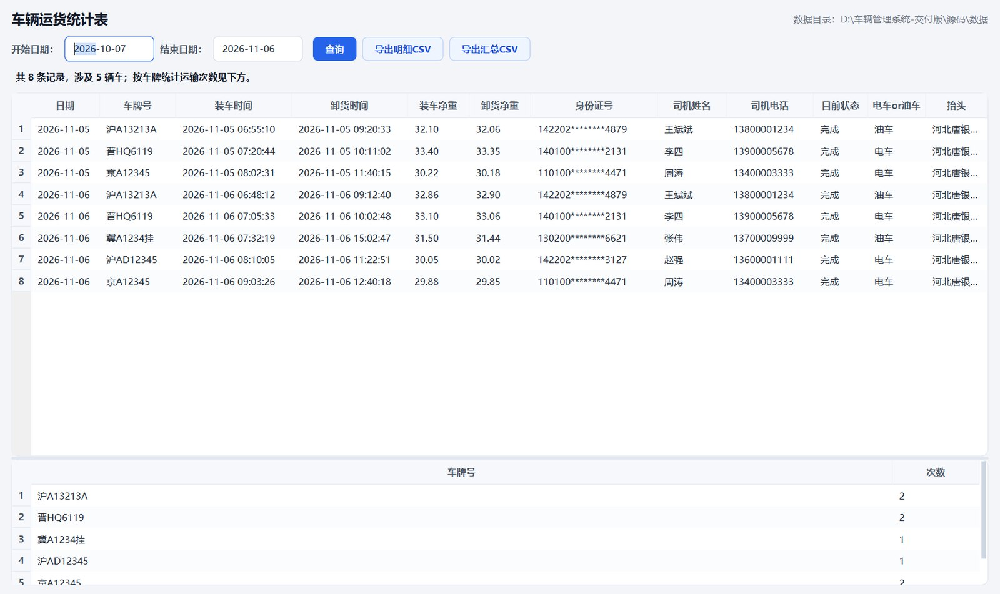

界面走查 · 按顺序看即可
每天怎么用这个软件
下面按实际操作顺序拆成六步，每一步都对应界面上的一块区域。答辩演示时从第 1 步开始往下点，或者用键盘 ← → 逐步切换。
①选日期
②拖装车单
③拖卸货单
④核对修改
⑤查询导出
⑥运输统计
演示建议：浏览器按 F11 全屏，屏幕宽度 1280 以上时截图文字最清楚。
1
打开软件，先确认日期
双击 车辆管理系统.exe 打开后，程序默认停在今天，标题会显示「2026年11月6日装车信息表」。
一天的数据对应一个文件，所以要补录以前的单子，先把日期切过去。

顶部右侧：日期框、前一天 / 后一天 / 今天，以及「打开数据文件夹」。
- 点日期框可以直接在日历里选任意一天。
- ◀ 前一天 / 后一天 ▶ 用来快速翻页，今天 一键回到当天。
- 切换日期时，当前这张表会自动保存，不需要先点保存。
- 最右边的「打开数据文件夹」可以跳到当天的 CSV 文件所在位置。
2
把装车磅单拖进绿色框
左边绿色的装车截图上传入口负责装车磅单。从微信把图片直接拖进来，或者点一下框去选文件，都支持一次多张。

绿色虚线框 = 装车单入口，认的是「重车时间 / 净重 / 司机姓名」这类字段。
- 拖入后程序自动识别：车牌号、重车时间、净重、司机姓名、身份证号。
- 一次拖 5 张会排队依次识别，进度条显示剩余数量。
- 如果拖进来的是微信的
.dat 加密文件，程序会提示跳过——先另存为图片再拖。
- 识别结果会先弹出核对窗口（见第 4 步），确认后才写进表格。
3
把卸货计量单拖进蓝色框
右边蓝色的卸货截图上传入口负责卸货单。操作和装车一样，只是提取的字段不同：取的是二次过磅时间、卸货净重和收货单位。

蓝色虚线框 = 卸货单入口，抬头取自单据顶部的收货单位。
- 如果当天的表格里已经有这辆车，卸货信息会合并到同一行，不会新开一行。
- 如果当天还没有这辆车（比如昨晚装车、今天卸货），程序会先把前一天的装车信息复制过来，再补上卸货信息。
- 合并后「目前状态」自动变成完成；只有装车是「装车」，只有卸货是「卸货」。
- 同一辆车一天跑两趟也没问题：装车时间不同，就是两行。
这一条是程序里最容易被问到的地方：合并规则是「车牌相同且当天已有该车」，复制规则是「当天没有该车且前一天有」。
4
在表格里核对和修改
拖入截图后，程序会先弹出一个核对窗口，把识别到的每个字段列出来，确认无误再点「确认导入」；导入之后，表格里任何一格仍然可以双击修改，改完就生效。


同一行的左右两半。共 11 列：车牌号、装车时间、卸货时间、装车净重、卸货净重、身份证号、司机姓名、司机电话、目前状态、电车or油车、抬头。
- 目前状态和 电车or油车 两列是下拉框，点一下就能选。
- 身份证号会校验 18 位，司机电话会校验 11 位，填错会变红提示。
- 按钮区：新增行 补一条空记录、删除选中行（先点行号选中）、保存当日表 立即写盘、导出Excel 导出当天数据。
- 不用一直点保存：程序每 60 秒自动保存一次，内容没变就不写盘。
- 每次写盘前会先备份到
数据\备份，保留最近 20 份，改错了可以找回来。

底部状态栏实时显示「当前显示几条 / 共几条」和当前文件路径，右下角常驻数据目录。
5
查询和导出
查询框不需要选字段，直接输入关键词就会实时过滤。输入 晋 出所有山西牌照，输入 王斌 出这个司机，输入 11-05 出那天的记录。

查询行 + 按钮区：左边是过滤框，右边是「清除」。
第二个页签「司机身份登记表」：身份证号是唯一键；「从每日信息导入司机」可以把历史记录里的司机一次性汇进来。
- 支持按车牌、车牌前缀、省份简称、司机姓名、电话、身份证号、日期查询。
- 点「清除」恢复显示当天全部记录。
- 查询只影响显示，不会改动数据；导出时导出的是当天完整数据。
- 司机身份登记在第二个页签，身份证号是主键，可以从历史记录里一键导入已有司机。
6
看运输统计
点右上角打开车辆运货统计表，会启动同目录下的统计程序（也可以单独双击 车辆运货统计表.exe）。它读取所有日期的 CSV，按时间段汇总。

上半部分是时间段内的明细，下半部分是按车牌统计的运输次数。
- 选好开始日期和结束日期，点「查询」。
- 跨天的同一趟（昨天装、今天卸）会自动去重，只算一次。
- 导出明细CSV 给完整记录，导出汇总CSV 给「车牌号 + 次数」两列，财务直接能用。
- 一万条记录查询不到 1 秒。
演示到这里就完整跑完一天的流程了：录入 → 核对 → 查询 → 统计 → 交报表。
看完可以回到主页面，或者再从头走一遍。
返回主页面